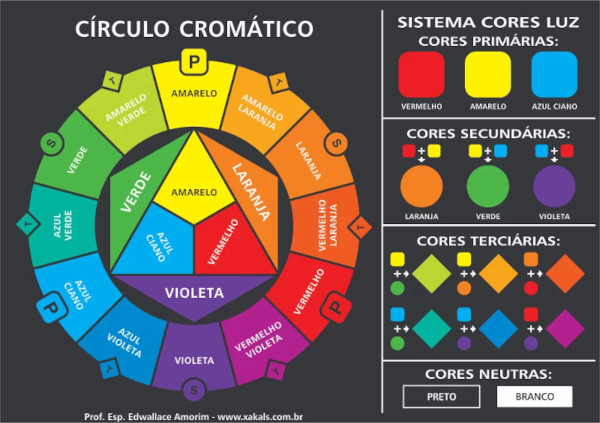

style{background-color:blue;color:white;}style{background-color:#0000ff; color:#ffffff;}style{background-color:rgb(0, 0, 255); color:rgb(255, 255, 255);}style{background-color:hsl(240, 100%, 50%); color:hsl(0, 0%, 100%);}Importante estudar sobre Psicologia das cores para definição de paletas e sua harmonização.
Segue abaixo recomendações de ferramentas para definição de paleta de cores:
Vale destacar também que temos uma ferramenta poderosa para nos auxiliar no próprio navegador, por meio da extensão Colorzilla
, que nos permite capturar a configuração de cores, gerando um código Hexadecimal, RGB ou HSL de uma página web, pdf, ou demais que estejam sendo apresentados na tela.
A cor aplicada ao fundo da página principal está descrita no head, usando um parâmetro: <background-image: linear-gradient>;;
É possível aplicar o gradiente também em casos isolados, conforme no exemplo abaixo:
GRADIENTE LINEAR
GRADIENTE RADIAL
Aplicação dos conceitos do estudo acima, além da inclusão de novos parâmetros CSS. "Exercício aplicado - cores"